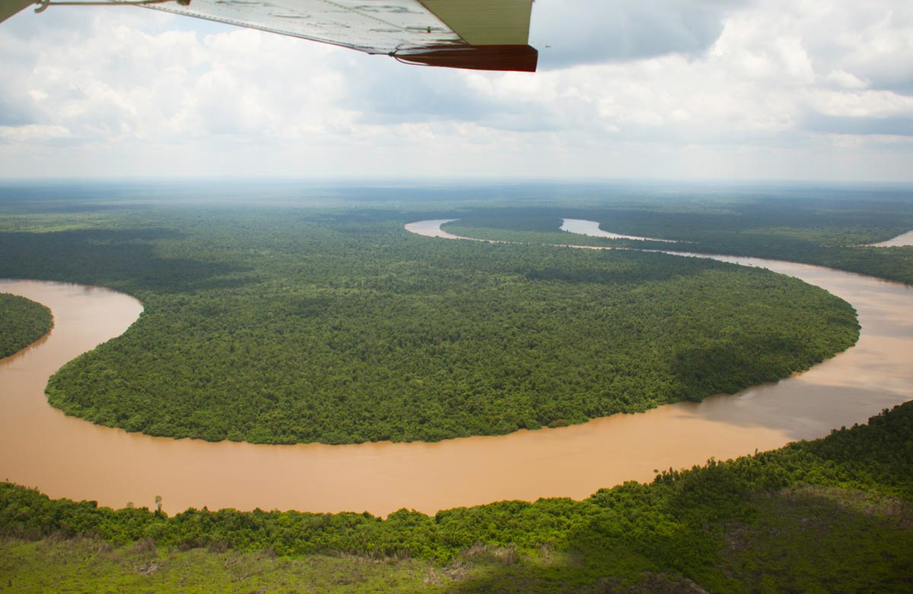

Die Rettungsstation in Nyaru Menteng ist die weltgrößte Auffangstation für Orang-Utans. Derzeit bietet sie über 500 Orang-Utans Zuflucht. Schon lange ist die Aufnahmekapazität der Station erschöpft. Die vorhandenen 4 kleinen Pre-Release Inseln konnten maximal 90 Orang-Utans beherbergen. Die Wartelisten für jene, die bereit für einen Umzug auf eine Insel waren, wurden immer länger. Viele Orang-Utans, die die Waldschule bereits abgeschlossen hatten, waren aufgrund ihrer Größe und Kraft nur noch in Sozialisierungskäfigen zu halten. Dort warteten sie auf die Umsiedlung oder Auswilderung. Ihre Chancen, erfolgreich ausgewildert zu werden, schwanden mit jedem Tag, den sie so ausharren mussten, denn mit der Zeit verlernen Orang-Utans die Fähigkeiten, die sie sich in der Waldschule angeeignet haben. Als sich 2015 die Möglichkeit auftat, eine nahegelegene Flussinsel als Orang-Utan Schutzgebiet zu nutzen, entstand die berechtigte Hoffnung, damit den Druck von der Rettungsstation in Nyaru Menteng zu nehmen. Nebst Pre-Release Aktivitäten sollte dort auch eine dauerhafte Zufluchtsstätte für jene Orang-Utans geschaffen werden, die aufgrund von Krankheiten, Missbildungen oder schweren Traumata nicht mehr ausgewildert werden können.

Salat Island: Topographie und Vegetation
Die insgesamt 34,19 km² große Salat-Insel gehört zum Pulang-Pisau-Distrikt in Zentral-Kalimantan. Der nördliche und zentrale Teil wurde in der Vergangenheit abgeholzt. Der Süden ist jedoch noch weitgehend intakt und umfasst ein Gebiet von 6 km². Der südwestliche Teil wird Badak Kecil (Klein Badak) genannt und ist ungefähr 1,02 km² groß. Ein künstlich angelegter Kanal trennt Badak Kecil vom Rest der Insel. Dieser Kanal wurde erweitert, um eine natürliche Barriere für die Orang-Utans zu schaffen. In diesem Teil der Insel werden diejenigen Orang-Utans, die nicht mehr ausgewildert werden können, leben. Der größere Teil von Badak Kecil im Osten umfasst 4,96 km². Dieser Teil der Insel wird für Pre-Release Aktivitäten genutzt und bietet Platz für etwa 150 bis 200 Orang-Utans.
Salat Island ist durch die Flüsse Nusa und Kahayan dauerhaft vom Festland abgeschnitten. Das Habitat ist weitgehend intakt und besteht aus einem alten Sekundär-Torfregenwald. Vegetationsaufnahmen ergaben, dass das Gebiet 26 Pflanzenfamilien beherbergt, von denen 19 auf dem Speiseplan der Orang-Utans stehen.
Inftrastrukturpläne und Ökotourismus:
Die ersten Baumassnahmen sind abgeschlossen, sodass Salat Island Ende 2016 in Betrieb genommen werden konnte. Insgesamt sollen vier Beobachtungsposten und 14 Fütterungsplattformen errichtet werden. Einfache Unterkünfte für das BOS-Personal werden benötigt, Infrastruktur (wie Strassen oder eine Stromversorgung), ein Käfigkomplex (wo Orang-Utans direkt nach ihrer Ankunft zur Eingewöhnung untergebracht werden oder medizinisch behandelt werden können) stehen auch auf dem Plan. Ausserdem gilt: Erfolgreiche Schutzprojekte funktionieren nur unter Einbeziehung der lokalen Bevölkerung. Als die BOSF die Genehmigung erhielt, die Region als Orang-Utan-Schutzgebiet verwalten zu dürfen, mussten die ansässigen Gemeinden zwar einige Felder aufgeben, aber sie standen der Grundidee, ihr Land für den Orang-Utan-Schutz zur Verfügung zu stellen, offen gegenüber. Und natürlich erhielten die Bewohner eine angemessene Entschädigung.
Ausserdem ist es der BOSF ein großes Anliegen, bei der Entwicklung und Qualifizierung der Dorfgemeinschaften mitzuwirken. Mindestens 75% der Mitarbeiter sollen aus den umliegenden Dörfern eingestellt werden. In Schulungen sollen sie alle nötigen Kenntnisse und Fähigkeiten erlangen, die für die Arbeit mit Orang-Utans notwendig sind. Erfahrene BOS-Mitarbeiter aus Nyaru Menteng werden die Teamleitung übernehmen. Geplant ist für die Zukunft, einige Teile der Insel für einen sanften Ökotourismus zugänglich zu machen. Die Einnahmen sollen in den Unterhalt der Insel fliessen.